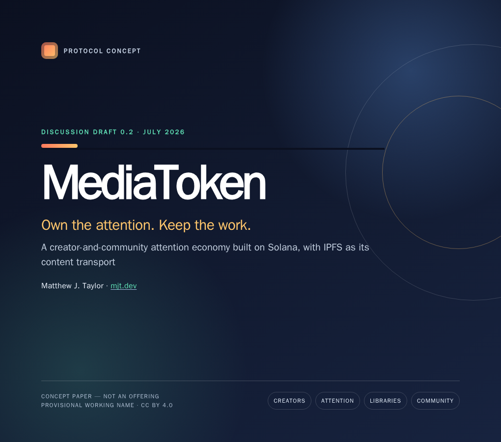

Discussion draft 0.2 · July 2026
MediaToken
Own the attention. Keep the work.
A protocol concept for turning committed attention around a creative release into a legible economic signal—one that can reward creators, early curators, and active communities without turning the work itself into property.
This is a concept paper, not a token offering or investment solicitation. The design is provisional, economically risky, and intended for critique before implementation.

The idea
Digital copies are abundant. Sustained human attention is not. MediaToken proposes a market for the attention gathered around each release: a token is a transferable position in demand for that release, not copyright, exclusivity, or ownership of an audience.
Creator fees reward the work. Later net demand can reward people who discovered and supported it early. Transparent grants can reward visible community contribution. A proposed Solana program makes the rules inspectable while keeping the creator’s media outside the chain.
The media moves over IPFS between people who choose to keep it in their own local libraries. There is no paid pinning market and no storage registry. A person may keep the bits without holding the token, or hold the token without keeping the bits.
What the paper contains
- The motivating thesis: participation in attention can become economically legible.
- A proposed per-release bonding-curve market with explicit creator and protocol fees.
- A voluntary local-library model in which IPFS is transport, not the product.
- A Solana account model, transaction flows, reserve invariants, and staged prototype plan.
- An adversarial treatment of speculation, manipulation, moderation, availability, securities risk, and the closed market’s negative-sum reality after fees.
Publication details
- Author
- Matthew J. Taylor
- Edition
- Discussion draft 0.2, July 15, 2026
- Canonical URL
- mjt.dev/mediatoken/
- Integrity
- SHA-256 checksums
Suggested citation
Taylor, Matthew J. “MediaToken: Own the Attention. Keep the Work.” Discussion draft 0.2, July 2026. https://mjt.dev/mediatoken/.